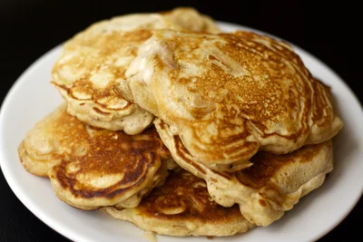

Apple Cinnamon Pancakes

Description
Light and fluffy apple cinnamon pancakes
from https://www.makebetterfood.com/recipes/apple-cinnamon-pancakes/.
Ingredients
- 1 1/2 cups milk
- 1 tablespoon lemon juice
- 2 cups all-purpose flour
- 4 teaspoons sugar
- 1 teaspoon salt
- 1 teaspoon baking powder
- 1/2 teaspoon baking soda
- 2 apples, finely cubed
- 1 teaspoon cinnamon
- dash of nutmeg
- dash of ginger
- 2 eggs
- 4 tablespoons melted butter
- 2 teaspoons vegetable oil
Steps
- Combine milk and lemon juice in a measuring cup. Stir well and let
stand for five minutes.
- Whisk together dry ingredients in a medium bowl.
- Place apples and spices in a bowl. Toss with your hands until
apple pieces are evenly coated.
- Whisk eggs in a small bowl.
- Add milk and melted butter to bowl with eggs. Whisk well to
combine.
- Pour milk-egg mixture into flour mixture. Whisk together quickly
until ingredients have just combined.
- Add apples to batter and stir unti combined.
- Grease a cast-iron or nonstick skillet and heat on the stove
over medium heat. Splash a few drops of water on the skillet.
When water sizzles, skillet is ready.
- Pour 1/4 cup of batter onto skillet for each pancake, being
careful not to crowd them. Bake until bottoms are golden brown,
edges appear to be dry, and bubbles have formed on the top, about
2 to 3 minutes. Flip pancake and let cook on the other side until
done, about 2 to 3 additional minutes. Add additional oil as
needed and repeat with remaining batter.